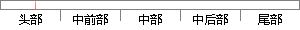

例如攻击者的利用的域名为“example.
片段位置图

相似结果|
相似片段 1：是高速缓存中的IP地址所指示的、为攻击者所控制的机器，李四在显示器上所见到的也是由攻击者提供的伪造登录符，．攻击者实际利用了A公司名字服务器的高速缓存，将自己的机器D置于李四的机器和域名为ccC．com
|
※ 片段修改建议 ※
近似词参考：- 例如：比方
- 利用：操纵 哄骗 使用 行使 应用
系统自动生成语句：比方攻击者的操纵的域名为“example.
注：本片段修改建议为系统自动生成，仅供参考。